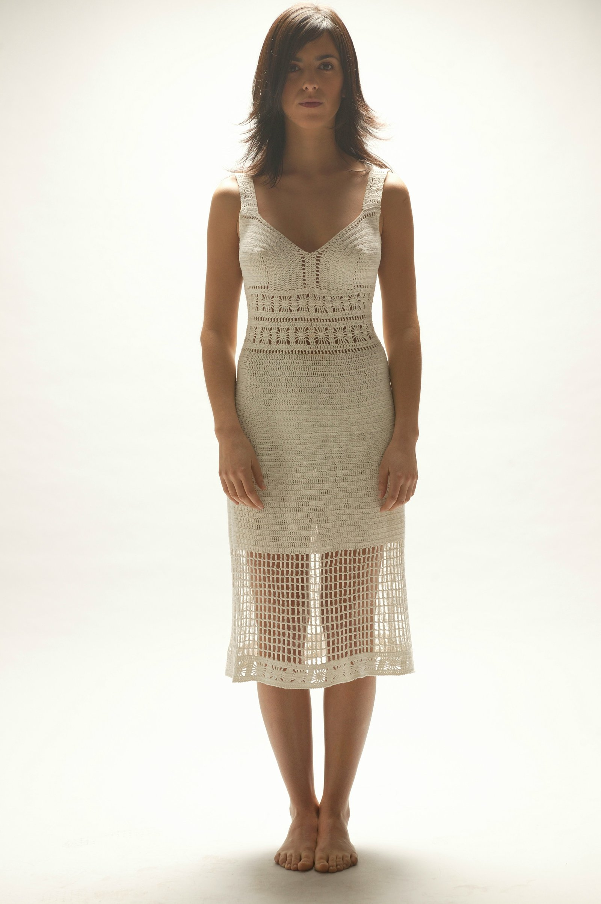

About
Gabriel Schkolnick es un reconocido fotógrafo y director audiovisual con sede en Santiago de Chile. Con más de dos décadas de experiencia, su trabajo destaca por una estética pulcra y un manejo magistral de la luz.
Colabora con las marcas, agencias y publicaciones más importantes a nivel global, moviéndose entre la imagen fija y el movimiento con una mirada honesta y cinematográfica.
Le interesan el retrato, la moda, la publicidad y el paisaje como escenario emocional. Está abierto a nuevos proyectos y colaboraciones.
Selected Clients
- Chanel
- Dior
- Concha y Toro
- Paris.cl
- Caras
- Velvet